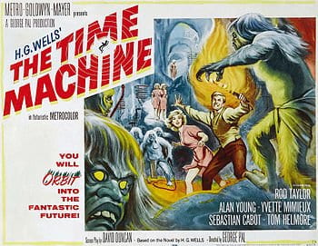
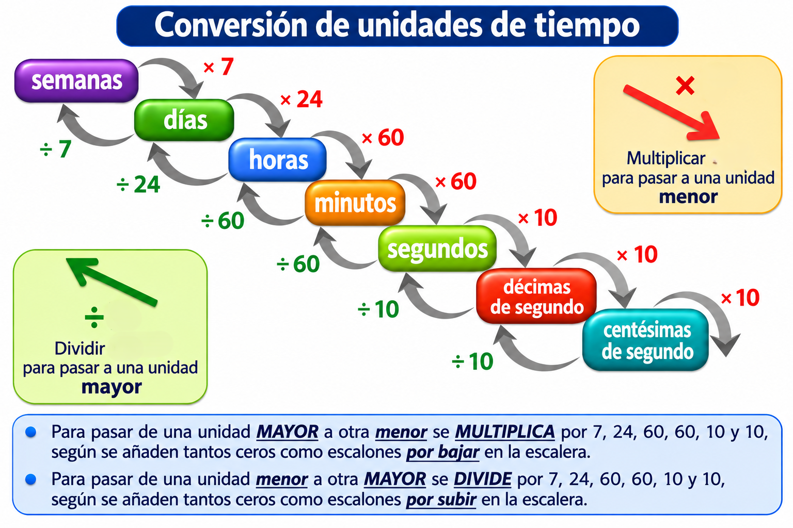

El tiempo es una magnitud física con la que medimos la duración o separación de acontecimientos, y nos permite ordenar los sucesos en secuencias. Junto con la longitud, es sin duda la magnitud "más cercana", aunque también la que quizás encierre más secretos y provoque más fantasías, y este filón lo ha aprovechado tanto la literatura como el cine, con títulos como La máquina del tiempo, In time o Al filo del mañana.
 |
Unidades de tiempo.
| La unidad de tiempo básica es el segundo (s). |
Es una unidad de tiempo muy pequeña, por lo que cuando utilicemos intervalos de tiempo muy grandes, es mejor utilizar otras unidades de medida.
El tiempo es una magnitud que en lo que se refiere a múltiplos es algo peculiar (en submúltiplos funciona igual que las anteriores), ya que no sigue el formato de decimal, sino el sexagesimal, es decir, para pasar de una unidad a la siguiente dividimos por 60 en vez de por 10.
Por ejemplo, si queremos saber cuántos minutos es un segundo multiplicamos por 60.
Cambio entre unidades.
¿Cómo se cambian de unidades de tiempo?

Practica.
Relaciona
Relaciona cada tarjeta con su pareja.
Relaciona cada tarjeta con su pareja.
","showMinimize":false,"itinerary":{"showClue":false,"clueGame":"","percentageClue":40,"showCodeAccess":false,"codeAccess":"","messageCodeAccess":""},"cardsGame":[{"url":"","x":0,"y":0,"author":"","alt":"","audio":"","color":"#7a297b","backcolor":"#f9f2fa","eText":"2%20horas%20y%20media","urlBk":"","xBk":0,"yBk":0,"authorBk":"","altBk":"","audioBk":"","colorBk":"#7a297b","backcolorBk":"#f9f2fa","eTextBk":"150%20minutos"},{"url":"","x":0,"y":0,"author":"","alt":"","audio":"","color":"#7a297b","backcolor":"#f9f2fa","eText":"1%20hora%20y%20cuarto","urlBk":"","xBk":0,"yBk":0,"authorBk":"","altBk":"","audioBk":"","colorBk":"#7a297b","backcolorBk":"#f9f2fa","eTextBk":"75%20minutos"},{"url":"","x":0,"y":0,"author":"","alt":"","audio":"","color":"#7a297b","backcolor":"#f9f2fa","eText":"3%20horas","urlBk":"","xBk":0,"yBk":0,"authorBk":"","altBk":"","audioBk":"","colorBk":"#7a297b","backcolorBk":"#f9f2fa","eTextBk":"180%20minutos"},{"url":"","x":0,"y":0,"author":"","alt":"","audio":"","color":"#7a297b","backcolor":"#f9f2fa","eText":"Media%20hora","urlBk":"","xBk":0,"yBk":0,"authorBk":"","altBk":"","audioBk":"","colorBk":"#7a297b","backcolorBk":"#f9f2fa","eTextBk":"30%20minutos"},{"url":"","x":0,"y":0,"author":"","alt":"","audio":"","color":"#7a297b","backcolor":"#f9f2fa","eText":"1%20hora","urlBk":"","xBk":0,"yBk":0,"authorBk":"","altBk":"","audioBk":"","colorBk":"#7a297b","backcolorBk":"#f9f2fa","eTextBk":"60%20minutos"},{"url":"","x":0,"y":0,"author":"","alt":"","audio":"","color":"#7a297b","backcolor":"#f9f2fa","eText":"1%20hora%20y%20tres%20cuartos","urlBk":"","xBk":0,"yBk":0,"authorBk":"","altBk":"","audioBk":"","colorBk":"#7a297b","backcolorBk":"#f9f2fa","eTextBk":"105%20minutos"}],"isScorm":0,"textButtonScorm":"Guardar la puntuación","repeatActivity":true,"weighted":100,"textAfter":"","version":2,"percentajeCards":100,"type":1,"showSolution":true,"timeShowSolution":3,"time":59,"evaluation":false,"evaluationID":"20260319083737TTBZGX","id":"20260320220557376KZQ","msgs":{"msgSubmit":"Enviar","msgClue":"¡Genial! La pista es:","msgCodeAccess":"Código de acceso","msgPlayStart":"Pulsa aquí para jugar","msgScore":"Puntuación","msgErrors":"Errores","msgHits":"Aciertos","msgMinimize":"Minimizar","msgMaximize":"Maximizar","msgFullScreen":"Pantalla Completa","msgExitFullScreen":"Salir del modo pantalla completa","msgNoImage":"Pregunta sin imágenes","msgEndGameScore":"Antes de guardar la puntuación comience la partida.","msgScoreScorm":"La puntuación no se puede guardar porque esta página no forma parte de un paquete SCORM.","msgOnlySaveScore":"¡Solo puede guardar la puntuación una vez!","msgOnlySave":"Solo puede guardar una vez","msgInformation":"Información","msgYouScore":"Su puntuación","msgAuthor":"Autoría","msgOnlySaveAuto":"Su puntuación se guardará después de cada pregunta. Solo puede jugar una vez.","msgSaveAuto":"Su puntuación se guardará automáticamente después de cada pregunta.","msgSeveralScore":"Puede guardar la puntuación tantas veces como quiera","msgYouLastScore":"La última puntuación guardada es","msgActityComply":"Ya ha realizado esta actividad.","msgPlaySeveralTimes":"Puede realizar esta actividad cuantas veces quiera","msgClose":"Cerrar","msgAudio":"Audio","msgNumQuestions":"Número de tarjetas","msgTryAgain":"Necesitas al menos %s% de respuestas correctas para obtener la información. Inténtalo de nuevo.","msgEndGameM":"Has completado el ejercicio. Tu puntuación es %s.","msgUncompletedActivity":"Actividad no completada","msgSuccessfulActivity":"Actividad superada. Puntuación: %s","msgUnsuccessfulActivity":"Actividad no superada. Puntuación: %s","msgTypeGame":"Relaciona","msgCheck":"Comprobar","msgRestart":"Reiniciar"}}Instrumentos para medir el tiempo.
El reloj, el calendario, el cronómetro, ... todo dependerá de los periodos que queramos medir.
Otras unidades fuera del Sistema Internacional.
Con el tiempo no pasa como con la longitud o la masa, tanto en los países anglosajones como en los que se tiene instaurado el SI la medida básica del tiempo es el segundo, por lo que estas unidades dependerán de la agrupación que se haga del tiempo:
-
Agrupación de días: semana, quincena, mes...
-
Agrupación de meses: trimestre, semestre...
-
Agrupación de años: lustro, década, siglo, milenio...
Completa
|
El niño tiene @@3@@ años. El abuelo tiene @@85@@ años. |
La niña tiene @@11@@ años. La abuela tiene @@76@@ años. |
Expresiones complejas e incomplejas.
|
Cuando hablamos de tiempo podemos expresar el resultado con una o varias unidades. Por ejemplo: Si hemos hecho una ruta de senderismo podemos decir: "Hemos tardado 2 h 40 min 30 s" (forma compleja) o bien "hemos tardado 2,675 horas" (forma incompleja). |
Para pasar de una forma a otra, solo hay que aplicar las reglas de cambio de unidades. Veamos unos ejemplos:
a) Expresa 4,5 horas en forma compleja.
b) Expresa 2 h 40 min 12 s en forma incompleja.
a) La parte entera del número decimal son las horas. Por lo que tenemos 4 horas.
¿Cuántos minutos son 0,5 horas? Para pasar de horas a minutos, multiplicamos por 60, luego tenemos 60·0,5=30 min.
Como no obtenemos un número decimal, sabemos que no hay segundos.
Luego 4,5 h son 4 h 30 min
b) Lo primero es pasar los segundos a minutos, dividiendo entre 60.
12:60=0,2
Luego tenemos 2 h 40,2 min.
Ahora tenemos que pasar los minutos a horas, dividiendo de nuevo entre 60:
40,2:60=0,67.
Por lo que tenemos un total de 2,67 h
Curiosidad
La unidad de tiempo, el segundo, fue en un tiempo considerado como la fracción 1/86.400 del día solar medio. La definición exacta de "día solar medio" se dejó a los astrónomos. Sin embargo, las mediciones mostraron que las irregularidades en la rotación de la Tierra hacen de esta una definición poco satisfactoria. Teniendo en cuenta que una definición muy precisa de la unidad de tiempo es indispensable para la ciencia y la tecnología, la 13ª CGPM (1967/68, Resolución 1) sustituyó a la definición del segundo por el texto siguiente:
El segundo es la duración de 9.192.631.770 periodos de la radiación correspondiente a la transición entre los dos niveles hiperfinos del estado fundamental del átomo de cesio 133.